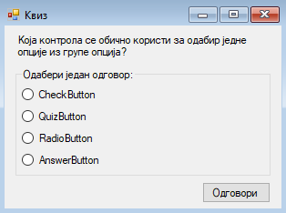
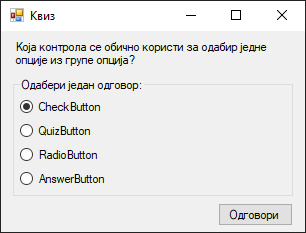
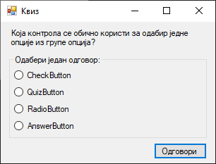
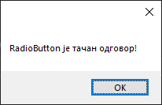
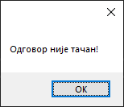
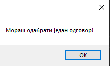

Радио дугмe¶
Контрола радио дугме (енгл. RadioButton) дефинисана је у класи
RadioButton у именском простору System.Windows.Forms, односно склопу
System.Windows.Forms.dll. Класа RadioButton наслеђује класу ButtonBase
која наслеђује класу Control, па због тога радио дугмад имају основна
својства, догађаје и методе као и остале контроле у Windows Forms App
пројектима.
Детаљан опис својстава, догађаја и метода класе RadioButton налази се у
званичној документацији.
Има их много и нема потребе наводити их све на овом месту.
Ова контрола омогућава одабир једне опције из групе опција када је упарена са
другим радио дугмадима. Упаривање се врши у контролама попуп GroupBox или
Panel контроле.
Чест пример употребе групе радио дугмади је у тестовима знања, где постоји само један тачан одговор или у обрасцима где се може одабрати само једна опција.
Задатак¶
Нека је задатак да креираш једноставну GUI апликацију Квиз у којој се приказује једно питање и четири понуђена одговора. Кликом на дугме са текстом Одговори, проверава се тачност одабраног одговора и о томе обавештава корисник.
Креирај нови Windows Forms App (.NET Framework) пројекат са формом димензија 320×240, постави контроле као на слици…

…и покрени апликацију:

Десила се једна иритантна ситуација за многе програмере. Унапред је одабрано
прво радио дугме, односно радио дугме чије својство TabIndex има вредност
0. Чак ни покушај поништавања одабира приликом учитавања форме неће помоћи…
private void Form1_Load(object sender, EventArgs e)
{
rbtOdgovor1.Checked = false;
rbtOdgovor2.Checked = false;
rbtOdgovor3.Checked = false;
rbtOdgovor4.Checked = false;
}
…и прво радио дугме остаће и даље одабрано:
Зашто се ово дешава? Према смерницама за израду Windows апликација компаније Microsoft, када постоји група радио дугмади, увек треба да постоји унапред одабрано дугме. У овом случају, то би могло да буде дугме са текстом „Не знам тачан одговор”. На теби је да процениш да ли желиш да поштујеш дату смерницу или да прибегнеш трику и заобиђеш је.
Један начин је да TabIndex са вредношћу 0 доделиш другој контроли на форми
чије је својство TabStop постављено на True. У овом случају то може да буде
дугме. Ако поставиш својство дугмета TabIndex на 0, ни једно радио дугме
неће бити унапред одабрано:

Други начин је да за сва четири радио дугмета својство TabStop поставиш на
False. Овим губиш функционалност тастера TAB над радио дугмадима, што се
свакако не препоручује.
Без обзира да ли желиш да поштујеш дату смерницу или не, треба да имплементираш
функционалност квиза. У овом случају треба да провериш да ли је својство трећег
радио дугмета Checked постављено на True:
private void btnOdgovori_Click(object sender, EventArgs e)
{
if (rbtOdgovor3.Checked)
{
MessageBox.Show(rbtOdgovor3.Text + " је тачан одговор!");
}
else if (rbtOdgovor1.Checked || rbtOdgovor2.Checked || rbtOdgovor4.Checked)
{
MessageBox.Show("Одговор није тачан!");
}
else
{
MessageBox.Show("Мораш одабрати један одговор!");
}
}
Ако је корисник одабрао тачан одговор добиће поруку…

…ако је одабрао нетачан одговор добиће поруку…

…и ако није одабрао ни један одговор добиће порук:

Овако имплементирано решење је можда довољно добро за ову ситуацију. Међутим,
у некој конкретној апликацији за квизове, питање, сет одговора и индекс тачног
одговора учитавали би се из фајла или базе података и динамички смењивали једно
за другим. Како у RadioButton контролама не постоји уграђено својство које
директно дефинише индекс радио дугмета у групи, за имплементацију таквог решења
могао би да користиш листу или низ RadioButton контрола заједно са
променљивом у којој се чува индекс тачног одговора.